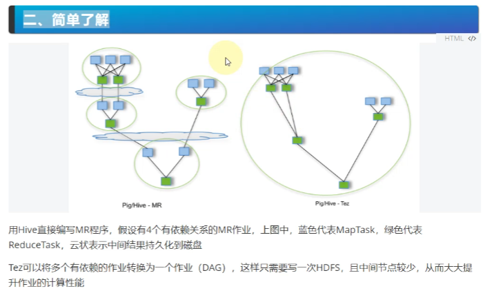

上图中,tez优化后只写一次磁盘, 所以如果某一次中间数据过大导致OOM, 则下一步的reduceTask就拿不到数据了, 这样的话所有步骤都需要重新来过, 这也是tez的缺陷性。
1、安装前提:
For Tez version 0.9.0 and higher, Tez needs Apache Hadoop to be version 2.7.0 or higher.
_files/Image [1].png)
_files/Image [2].png)
2、下载:
一般下载"-bin"文件,而不是下载"-src"文件, 因为"-bin"文件可以直接安装使用, 而"-src"文件需要先编译才能安装。
3、上传到Linux虚拟机:
hive安装到在哪个节点, 就把tez安装到哪个节点中去, 否则也不可能在当前节点给tez更换计算引擎了。所以把tez的安装包上传到
_files/Image [3].png)
4、解压:
tar -zxvf apache-tez-0.9.2-bin.tar.gz -C ./apps/
5、把解压前的hive压缩包放到hdfs的目录中去: (注意这里上传的是tez的压缩包,而不是解压目录)
为什么要把hive放到hdfs中? 因为目前只在hive所在的节点安装tez, 但是执行任务时, 并不只是在hive所在的节点上执行, 而是会在集群中很多不同的datanode节点上执行(就像mapreduce程序将任务分发到各个节点执行,tez也一样), 为了保证集群中的各个节点都能使用到tez计算引擎(框架),就需要把tez的依赖包(即tez的压缩包)上传到hdfs之上, 供各个节点使用。
hadoop fs -mkdir -p /apps/tez/
hadoop fs -put apache-tez-0.9.2-bin.tar.gz /apps/tez/
_files/Image [4].png)
6、修改配置文件
(1)进入hive的安装目录的conf文件夹下, 并新建一个tez-site.xml的文件,用于配置一些Tez的参数:
cd /home/hadoop/apps/apache-hive-2.3.6-bin/conf
vim tez-site.xml
在里面添加如下内容:
<configuration>
<property>
<!-- 这里指出hdfs上的tez.tar.gz包的位置,便于集群使用tez的jar包 -->
<name>tez.lib.uris</name>
<value>${fs.defaultFS}/apps/tez/apache-tez-0.9.2-bin.tar.gz</value>
</property>
<property>
<!-- 使用hadoop自身的lib包,设置为true的话可以使用minimal的tez包,false的话则使用tez-0.9.2.tar.gz的包 -->
<name>tez.use.cluster.hadoop-libs</name>
<value>true</value>
</property>
<property>
<description>Enable Tez to use the Timeline Server for History Logging</description>
<name>tez.history.logging.service.class</name>
<value>org.apache.tez.dag.history.logging.ats.ATSHistoryLoggingService</value>
</property>
</configuration>
(2)依然在hive的安装目录的conf文件夹下,往hive-env.sh中添加一些内容(让hive能使用到tez的jar包):
如果没有hive-env.sh文件, 则将hive-env.sh.template模板文件cp一份:
cp hive-env.sh.template hive-env.sh
vim hive-env.sh
然后将hive-env.sh里面的内容末尾处改为如下内容:
# Set HADOOP_HOME to point to a specific hadoop install directory
HADOOP_HOME=/home/hadoop/apps/hadoop-2.7.4
# Hive Configuration Directory can be controlled by:
export HIVE_CONF_DIR=/home/hadoop/apps/apache-hive-2.3.6-bin/conf
# Folder containing extra libraries required for hive compilation/execution can be controlled by:
#export HIVE_AUX_JARS_PATH=
#TEZ_HOME是tez的解压安装目录
export TEZ_HOME=/home/hadoop/apps/apache-tez-0.9.2-bin
export TEZ_JARS=""
#通过两个for循环把所有tez需要的jar包都放到TEZ_JARS中
for jar in `ls $TEZ_HOME |grep jar`; do
export TEZ_JARS=$TEZ_JARS:$TEZ_HOME/$jar
done
for jar in `ls $TEZ_HOME/lib`; do
export TEZ_JARS=$TEZ_JARS:$TEZ_HOME/lib/$jar
done
#因为上面的循环导致TEZ_JARS的第一个字符是":",所以要去掉这个冒号
TEZ_JARS=${TEZ_JARS:1}
export HIVE_AUX_JARS_PATH=$TEZ_JARS
效果如下图(绿框中的内容如果之前安装hive时改过则不需要动, 如果没改过则也要加上):
_files/Image [5].png)
如果需要再加一些额外的jar包,如lzo压缩算法的包(前提是lzo的jar包如"hadoop-lzo-0.4.20.jars"已经提前放在"/home/hadoop/apps/hadoop-2.7.4/share/hadoop/common/"目录下了,则把上图汇总最后一句代码改为:
export HIVE_AUX_JARS_PATH=$TEZ_JARS:/home/hadoop/apps/hadoop-2.7.4/share/hadoop/common/hadoop-lzo-0.4.20.jars
(3))依然在hive的安装目录的conf文件夹下,修改hive-site.xml, 将hive的计算引擎修改为tez(不修改的话默认的计算引擎是mapreduce)。
vim hive-site.xml
在<configuration> </configuration>之间加入如下内容:
<property>
<name>hive.execution.engine</name>
<value>tez</value>
</property>
_files/Image [6].png)
_files/Image [7].png)
hive-env.sh里面已经有了如下红框的内容:(我安装hive的时候是没有修改hive-env.sh这个文件的)
_files/Image [8].png)
_files/Image [9].png)
7、关闭虚拟内存检查(
如果不关闭虚拟内存检查, 而你本身的内存不够的话,则会在使用hive时出现异常。(尤其是虚拟机,因为虚拟机分配的内存很小很容易出现这种状况)
_files/Image [10].png)
_files/Image [11].png)
cd /home/hadoop/apps/hadoop-2.7.4/etc/hadoop
vim yarn-site.xml
加入以下内容:
<property>
<name>yarn.nodemanager.vmem-check-enabled</name>
<value>false</value>
</property>
修改完之后记得把yarn-site.xml文件分发到所有集群节点, 保持hadoop集群各节点的配置相同。
scp /home/hadoop/apps/hadoop-2.7.4/etc/hadoop/yarn-site.xml hadoop@hadoop02:/home/hadoop/apps/hadoop-2.7.4/etc/hadoop/
scp /home/hadoop/apps/hadoop-2.7.4/etc/hadoop/yarn-site.xml hadoop@hadoop03:/home/hadoop/apps/hadoop-2.7.4/etc/hadoop/
...
分发完成后, 要重启hadoop集群, 在yarn-site.xml中新加入的配置才会生效。
重启集群后, 如果成功安装Tez, 则运行(原先需要转换为mr程序的)sql语句时会出现一个进度条如下图:
_files/Image [12].png)
_files/Image [13].png)
安装完成后要重启hadoop集群, 否则执行sql语句时hive会无法正常使用tez。
8、
_files/Image [14].png)
插入一条数据时的内容如下:
_files/Image [15].png)
_files/Image [16].png)
_files/Image [17].png)
_files/Image [18].png)
_files/Image [19].png)
_files/Image [20].png)
_files/Image [21].png)
_files/Image [22].png)
tez.lib.uris和tez.lib.classpath是设置tez安装包上传到集群后的lib类库所在的路径,让集群能够找到。
tez.use.cluster.hadoop-libs 指明是否使用hadoop的类库, true表示使用
tez.history.logging.service.class是历史日志服务的记录
_files/Image [23].png)
注意这里上传的是解压后的目录,而不是压缩包,和前面的视频不同。
_files/Image [24].png)
2.6 一些出现的状况的处理:
_files/Image [25].png)
_files/Image [26].png)
解决方案一中, 修改了yarn-site.xml 修改的内容不能立即生效, 要求重启集群才能生效(修改了yarn-site.xml是造成了集群需要重启的原因)。
_files/Image [27].png)
一般只用方案一来解决问题,方案二用的少。